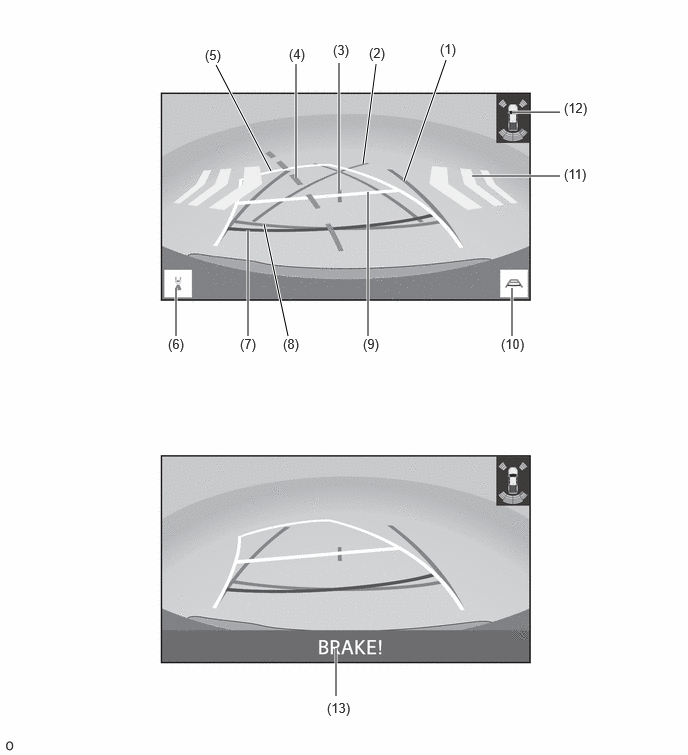
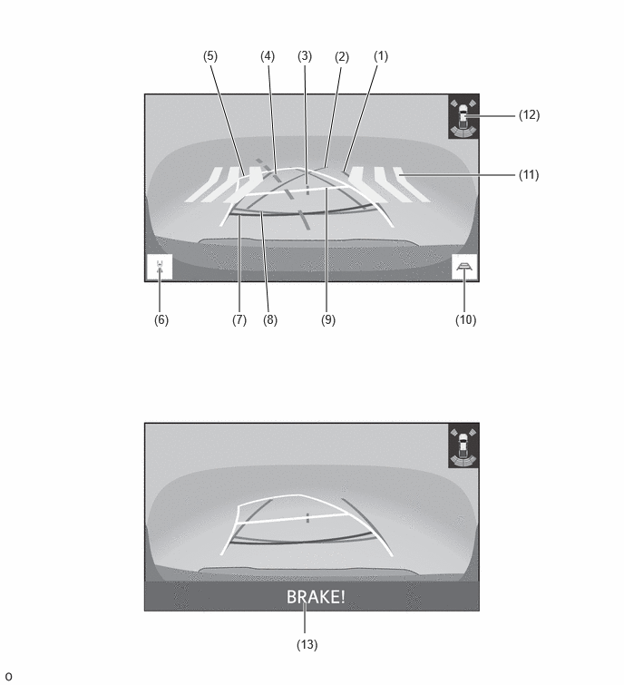
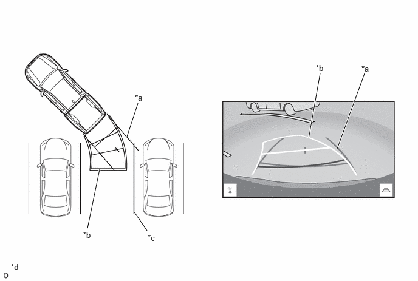
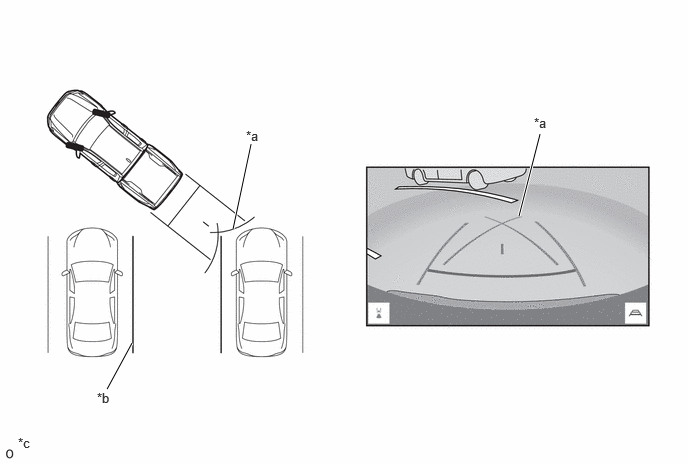
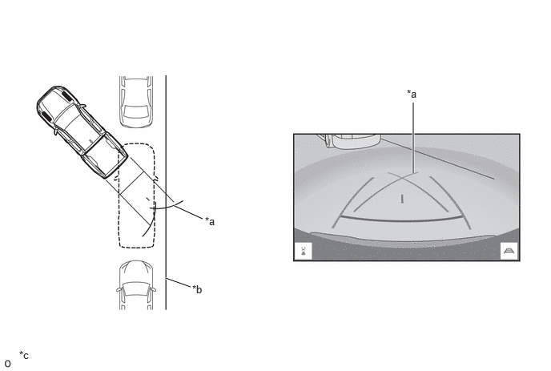

- Captures images of the area behind the vehicle.
- The parking assist guide lines that are calculated based on signals from the steering sensor are superimposed on the captured image. Then, the image is sent to the radio and display receiver assembly as video signals.
- When the tailgate is open, superimposing of parking assist guide lines is canceled and only the captured image is sent as video signals.
| Last Modified: 10-07-2025 | 6.11:8.1.0 | Doc ID: NM100000002GLDC |
| Model Year Start: 2024 | Model: Tacoma | Prod Date Range: [12/2023 - ] |
| Title: PARK ASSIST / MONITORING: PARKING ASSIST MONITOR SYSTEM: PARKING ASSIST MONITOR CONTROL; 2024 - 2026 MY Tacoma Tacoma HV [12/2023 - ] | ||
PARKING ASSIST MONITOR CONTROL
FUNCTION OF MAIN COMPONENTS
|
Component |
Function |
|---|---|
|
*1: Models with manual transmission
*2: Models with automatic transmission *3: Models with intuitive parking assist system *4: Models with parking support brake system *5: Models with RCTA function |
|
|
Rear Television Camera Assembly |
|
|
Radio and Display Receiver Assembly |
|
|
Steering Sensor |
Detects the direction and angle of the steering wheel and sends the resulting signals to the rear television camera assembly. |
|
Back-up Light Switch Assembly*1 |
Outputs the R shift position signal to the ECM. |
|
Park/Neutral Position Switch Assembly*2 |
Detects the shift position and sends that information to the ECM. |
|
ECM |
|
|
Main Body ECU (Multiplex Network Body ECU) |
Sends the tailgate condition signal to the rear television camera assembly. |
|
Clearance Warning ECU Assembly*3 |
Sends an intuitive parking assist and parking support brake (PKSB)*4 system information signal to the rear television camera assembly. |
|
Blind Spot Monitor Sensor RH*5 |
Sends a RCTA function information signal to the rear television camera assembly. |
|
Central Gateway ECU (Network Gateway ECU) |
Relays the signal between the CAN communication lines. |
|
DLC3 |
The Global TechStream (GTS) can be connected to read the Diagnostic Trouble Codes (DTCs) of malfunctions. |
OPERATING CONDITION
(a) The parking assist monitor system operates when both of the following conditions are met:
|
SYSTEM CONTROL
(a) The rear television camera assembly combines guide lines and an image to the rear of the vehicle captured and outputs a video signal to the radio and display receiver assembly.
(b) 2 types of screen modes are provided: rear view mode and wide rear view mode. Rear view mode helps the safety confirmation when parking. Wide rear view mode helps the safety confirmation in left and right directions during start-off using the wide visible area.
(c) Estimated course line display mode, parking assist guide line display mode, distance guide line display mode and estimated center course line display mode are provided for guide line display mode.
Guide Line Display Mode List
|
Guide Line Display Mode |
Outline |
|---|---|
|
Estimated Course Line Display Mode |
Estimated course lines are displayed which move in accordance with the operation of the steering wheel. |
|
Parking Assist Guide Line Display Mode |
The steering wheel return points (parking assist guide line) are displayed. |
|
Distance Guide Line Display Mode |
Distance guide lines only are displayed. |
|
Estimated Center Course Line Display Mode |
Estimated course lines, the vehicle center line, etc. are displayed in accordance with the operation of the steering wheel. |
Rear View Mode
HINT:
The illustration shown is an example only. The illustration may differ from the actual vehicle screen.
Wide Rear View Mode
HINT:
The illustration shown is an example only. The illustration may differ from the actual vehicle screen.
Rear View Mode/Wide Rear View Mode Screen Display Contents List
|
No. |
Item |
Description |
|---|---|---|
|
*1: Models with RCTA function
*2: Models with intuitive parking assist system *3: Models with parking support brake system |
||
|
(1) |
Vehicle Width Guide Line (Blue) |
Indicates the estimated vehicle width. |
|
(2) |
Parking Assist Guide Line (Blue) |
Indicates the path the vehicle will follow if the driver turns the steering wheel fully. |
|
(3) |
Vehicle Center Guide Line (Blue) |
Indicates the estimated position on the ground of the center of the vehicle. |
|
(4) |
Estimated Center Course Line (Green) |
Indicates the approximate vehicle center near the vehicle bumper in accordance with the operation of the steering wheel. |
|
(5) |
Estimated Course Line (Yellow) |
Moves in sync with the steering wheel to indicate the estimated reverse course of the vehicle. |
|
(6) |
Display Mode Switching Button |
The rear view mode and the wide rear view mode are switched. |
|
(7) |
Distance Guide Line (Red) |
Moves together with estimated course lines in sync with the steering wheel. The center of the line indicates a position on the ground approximately 0.5 m (1.6 ft.) behind the rear bumper. |
|
(8) |
Distance Guide Line (Blue) |
Indicates a position on the ground approximately 0.5 m (1.6 ft.) behind the rear bumper. |
|
(9) |
Distance Guide Line (Yellow) |
Moves together with estimated course lines in sync with the steering wheel. The center of the line indicates a position on the ground approximately 1.0 m (3.3 ft.) behind the rear bumper. |
|
(10) |
Guide Line Switching Button |
Select to switch the guide line mode. |
|
(11) |
RCTA Icon*1 |
If a vehicle in the rear side direction is detected when the blind spot monitor system (RCTA function) is activated, the RCTA icon is displayed. |
|
(12) |
Intuitive Parking Assist System Icon*2 |
If a static object is detected when the intuitive parking assist system is activated, the approximate distance between the vehicle and the static object is displayed. |
|
(13) |
PKSB System Information*3 |
Displayed when the PKSB system detects an operation target with which the vehicle could collide. |
(1) Estimated Course Line Display Mode
- The estimated course lines inform the driver of the steering angle when driving in reverse. By driving the vehicle in reverse while steering to match the estimated course lines with the parking space boundary line, the vehicle can be guided into the parking space.
- The vehicle width guide lines can be used to
determine whether the vehicle is parked straight in
the parking space by confirming whether the parking
space boundary line and vehicle width extension lines
are crossed or parallel. 
*a
Vehicle Width Guide Line
*b
Estimated Course Line
*c
Painted Line of the Parking Space
*d
The illustration shown is an example only. The illustration may differ from the actual vehicle screen.
(2) Parking Assist Guide Line Display Mode
- The parking assist guide lines inform the driver
of a part outside of the estimated course lines when
the steering wheel is fully turned while driving in
reverse. By driving the vehicle in reverse to the
desired parking position that matches the parking
guide lines with the parking space boundary line,
sides of the road, etc., the vehicle can be guided to
an appropriate position to start turning the steering
wheel.
Perpendicular Parking
*a
Parking Assist Guide Line
*b
Painted Line of the Parking Space
*c
The illustration shown is an example only. The illustration may differ from the actual vehicle screen.
-
-
Parallel Parking
*a
Parking Assist Guide Line
*b
Shoulder and Parking Space Lines, etc.
*c
The illustration shown is an example only. The illustration may differ from the actual vehicle screen.
-
-
DIAGNOSIS
(a) In order to make system inspections easier to perform, a diagnosis function is used in consideration of serviceability. The DTCs of malfunctioning parts can be read by connecting the Global TechStream (GTS). Refer to the Repair Manual for details.